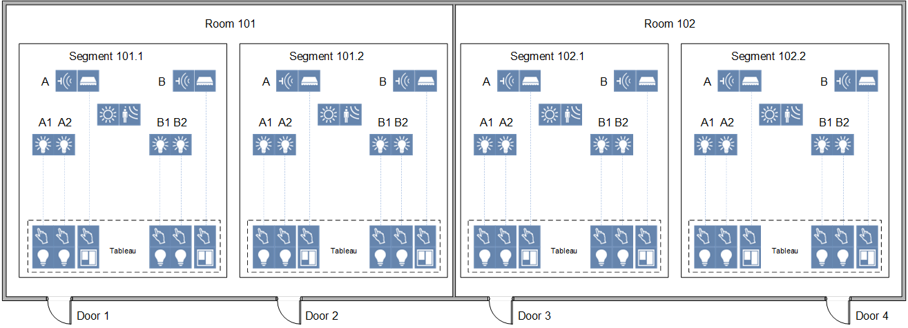
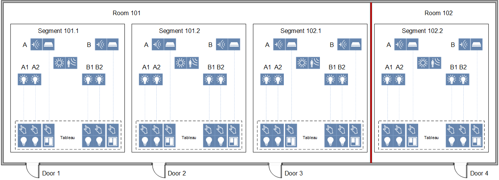
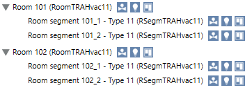
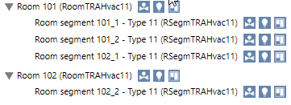

Reassigning Room Segment
Scenario: You have two rooms, each with 2 segments, controlled by the operator panel on the applicable door. Moving the separating wall creates a room with 3 segments and one room with 1 segment. Only the individual, applicable segment can be controlled by the operator panel on the door.
Original Configuration |
Each room has 2 segments |
 |
Changed Configuration |
One room with 3 segments, one room with one segment |
 |

If the function Convert room template to graphic page is used on the project, existing graphics must be deleted and generated anew.
No additional engineering is required if the Default room templates are used on the project.
- The preconditions are met.
- You made a Backup copy of the existing configuration. You can use this export file to restore the last saved configuration with Import.
- Select Project > [Network name] > [Building] > [Floor].
- Select the room [Room 101] and press CTRL and select [Room 102].
- Drag the rooms to the room information list.

- Select the Room structure tab.
- From room 102, drag room segment 102_1 to room 101.

NOTE: You can also move the segment with to the assignment list and reassign it at a later date with
to the assignment list and reassign it at a later date with  .
. - The room segment 102_1 is now assigned to room 101.
NOTE: You can Undo last operation until the changed configuration is saved.
until the changed configuration is saved. - Click Save
 .
.
NOTE: You cannot undo a saved configuration. - The new configuration is written to the automation station.
- Click Summary Log to display the changes.
NOTE: You still have to make changes for Lighting control and Shading control as applicable.
- (Optional) Perform the following steps if you want to edit the descriptions for the room segments:
a. In System Browser, select room segment 102_1.
b. Select the Object Configurator tab.
c. Open the General expander.
d. In the Description field, edit the text, in the example for room segment 101_3.
e. Select the Overwrite Protection check box.
f. Click Save Project.